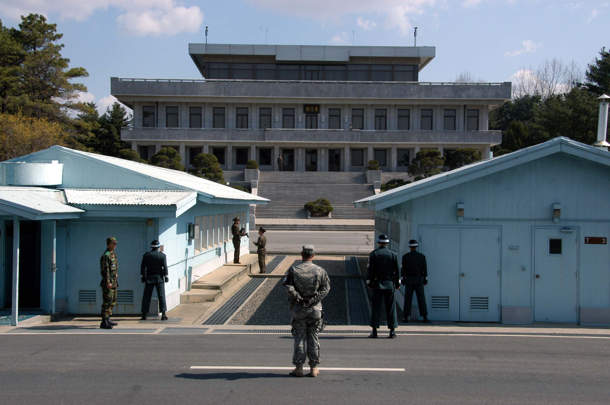

Map showing the division of North and South Korea until 2031.

Arch of Reunification


Korean DMZ, literal and historic symbol of the animosity between North and South Korea.
Korean reunification was a process that began in 2029 in which North Korea (occupied by South Korea) and the Republic of Korea (South Korea) began reducing economic and political barriers in the Korean Peninsula to eventually lead to a reunited Korea. The end of the unification process is officially referred to as Korean Reunification, celebrated on 11 February, 2031 (Korean Unity Day). Following Korean Reunification, Seoul was once again designated as the capital of united Korea.
The North Korean regime started to falter in December 2026, when China ended foreign aide to North Korea to shore up their own food supplies in the face of the Famine of 2027. North Korea responded with nuclear threats against China and South Korea, leading to incread tensions in the region. In an effort to preserve their power, the Kim regime purged many high-ranking officials. declared open rebellion and coast-lying villages saw thousands of North Koreans fleeing by boat to China, South Korea, and Japan. Following a year-long attempt to control the situation, Supreme Leader Kim Jong-un was assassinated and the country fell into a state of civil unrest. This led to an international intervention by the US, Japan, and South Korea (among others), which led to the negotiations between the DPRK and ROK that culminated in a Unification Treaty. The actual process of reunifying, however, would ultimately take decades only really ending with the outbreak of the Third World War.
The united Korea is considered to be the enlarged continuation of the South's republic and not a successor state, just like the reunited Germany back in 1990 was considered the enlarged continuation of West Germany's federal republic. As such, it retained all of South Korea's memberships in international organizations including the Trans-Pacific Partnership, while automatically relinquishing membership in international organizations to which only North Korea belonged.
History[]
North Korean Civil War[]
Supreme Leader Kim Jong-Un attempted to wrest control of the situation by having the navy blockade the coasts and the army step up patrols along the DMZ and threatening China and the US with nuclear attack in exchange for aide. To preserve their power, the Kim dynasty purged many high-ranking officials. By the winter of 2026, the North Korean military began to see mass defections, and reports of cannibalism among the peasants lead to infighting among military leaders in Pyongyang. On 12 February, 2028, Kim Jong-un was assassinated by soldiers marching in a military Parade. General Pak Yong-sik promptly declared Marshal Law and ordered the assassins executed, but rival generals and admirals began making their own declarations as Supreme Leader, leading to more infighting and sending the country's nuclear stockpile into question. An international task force of 40 countries was organized to restore order following an emergency summit of the United Nations in which 3 separate DPRK delegations all claimed to control the country's nuclear arsenal.
US, and South Korean land forces made up the brunt of International Peacekeeping Force, while Japan contributed naval and air power early in the conflict and ground troops shortly after the initial invasion. Pyongyang was secured on March 29, 2029 by South Korean forces. US and Japanese governments agreed to provide naval and air cover for the South Koreans as well as their own forces, but avoided taking out anything other than critical military targets and securing the nation's nuclear arsenal. A civilian government was hastily organized by the DPRK bureaucracy and the remaining military forces in the capital to commence negotiations with the South for reunification in exchange for immediate international aide. International forces liberated the six known labor camps, and discovered dozens of unreported mines and factories using slave labor. The reports of starvation and cannibalism were revealed to be not nearly as severe as the situation was discovered to be, and it was estimated that some 11 million North Koreans starved to death in the famine of 2027, which continued well into 2029. The audacity led to an outcry of international support and charitable donations. Japan and the US both agreed to hand off occupation duties to the South, now united, Korean military after removing and disabling DPRK nuclear stockpiles and facilities.
Early attempts at unification[]
After the Reunification treaty, Koreans on both sides began attempting to cross the border to reunite long separated families. Free travel was still somewhat restricted while EOD teams began the laborious process of clearing the DMZ of remaining landmines. UN and South Korean humanitarian aide stations established a program to allow families from the North to join those in the South, shifting the care taking responsibility onto the populous. These first months of reunification were defined by images of families separated by decades reuniting, humanitarian efforts to feed a nation of 15 million starving people, and an occupation that was largely reduced to disarming the former North Korean military. The US and Japan continued to provide naval and aerial reconnaissance support for the Koreans until 2031, when Reunification was officially put into effect. The 2031 Reunification declaration was based on disarmament guidelines, the creation of a unified Korean command structure, and the return of free travel between North and South.
Within days of Reunification and the restoration, a mass exodus of those in the North began streaming into the South, and Southern businesses began moving North to capitalize on new markets and territory. Southern Agribusiness began setting up new farmland and manufacturing centers, while South Korean startups began moving to Pyongyang to take advantage of the 5 year tax break for Korean companies that invested in the North. For the former communist dictatorship's residents, this infusion of capital was a welcome relief. Unfortunately, many who had fled to the South after the free travel returned, began looking for handouts and placed a massive burden on the Korean welfare system. Problems also emerged in the North as former DPRK military and police forces who still expected to be treated like kings among their own people were caught demanding bribes and favors from the new businesses. Few police and military forces would join the retraining program set up by the government in Seoul, and many simply retired and used their decades of military training to organize a take-over of the Korean Mafia. Organized crime in the North began to deter businesses from relocating there, and foreign businesses began threatening to withdraw interest in the region.
South Korea's government expanded its massive social welfare and public works program to improve the quality of life in the North, discourage organized crime, and address the problem of homelessness in the South from former DPRK citizens. By 2037, South Korea's development program for the North was costing the country so much that they were forced to privatize a number of public services to reduce the strain on the treasury. Private healthcare and retirement services were introduced while funding was cut for public health and pension programs. Despite these early efforts, the South's economy continued to decline under the weight of the North's economic and criminal problems.
World War III[]
As Japan began to impose a more tangible threat to the Korean peninsula, the US began offering military and financial assistance to Korea. This buildup of the military provided much needed economic relief, but also united the country in a way that previous attempts never had been able to. The Korean government reopened North Korean military facilities and factories, drove southern experts north to manage the creation of a wartime economy, and brought the country together with a propaganda campaign designed by Hwang Sye-kyun, a former North Korean propaganda artist. Japan's invasion galvanized this effort, and unified Koreans against a common enemy like they had not seen in a century. In an irony of history, the national capital was temporarily relocated to Pyongyang after the Japanese took Seoul.
After the war, the US-funded reconstruction effort led to a post-war economic boom, made stronger by a more integrated nation. The northern half of the country remains much more rural than the southern half, and while Pyongyang has grown to be a major metropolitan hub, Seoul remains the political and economic core of the country. Postwar Korea benefited from its proximity to China and Pacific Russia and a relationship with America that kept it a major trade hub. Today, Korea has suffered much like the rest of the world due to automation, but it has an aging population that helped build a stronger social safety net that made things tolerable. In terms of their role in the global economy, they resemble 21st century Finland.